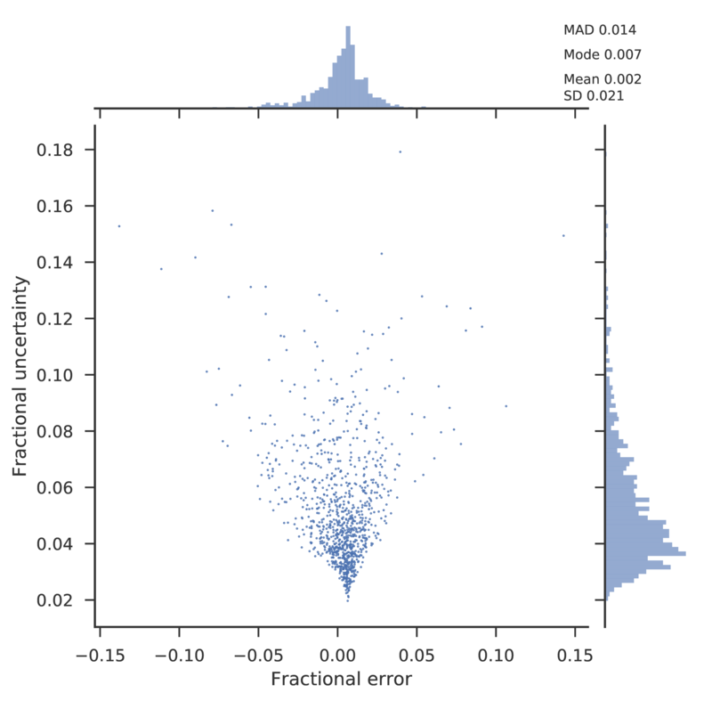
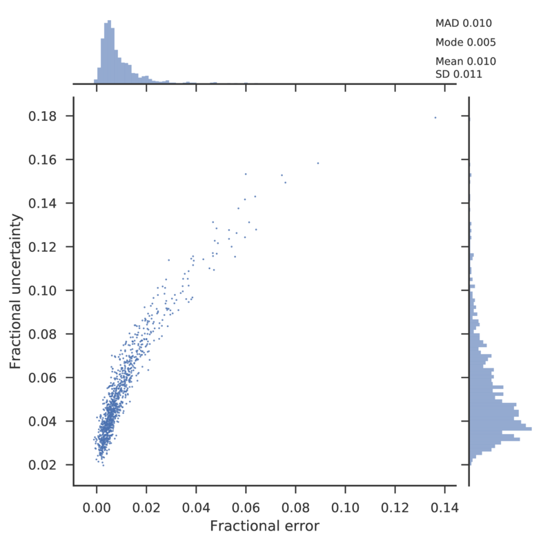
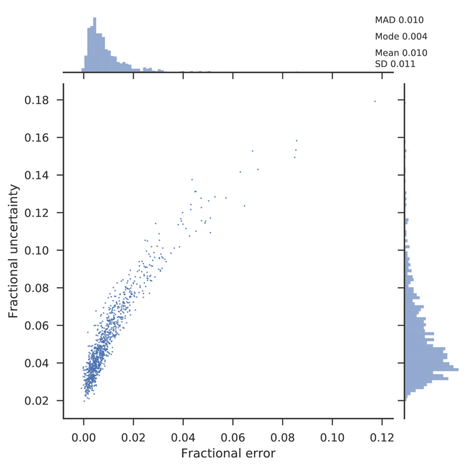
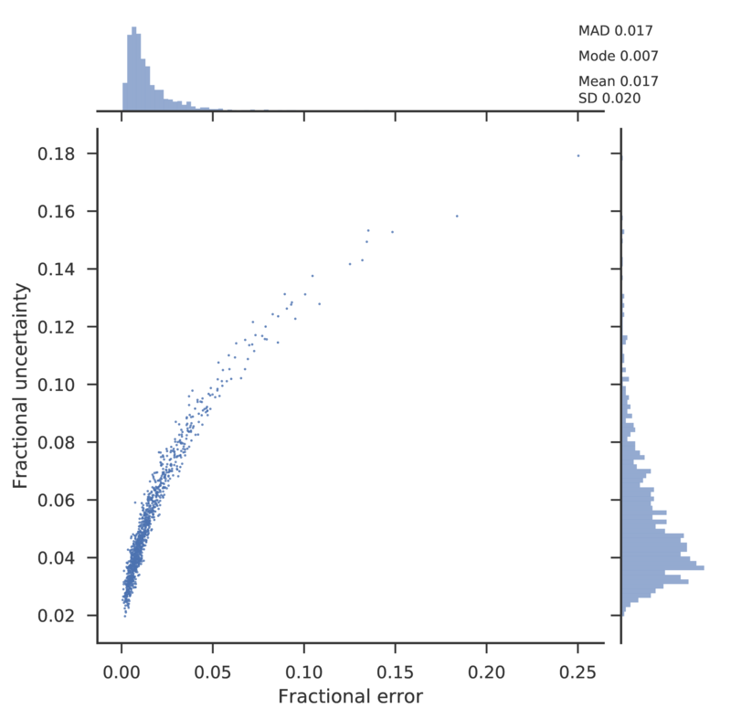

Open cluster¶
To test the Priors in the specific case of an open cluster, we simulated 1000 objects from a Pleiades like cluster. In this case the distances were drawn from a Gaussian distribution with mean at \(\mu=135\) pc, and standard deviation \(\sigma=20\) pc.

Relative errors obtained using a Uniform prior with scale 500 pc.
Relative errors obtained using a Gaussian prior with scale \(1\sigma\).
Relative errors obtained using a Gaussian prior with scale \(5\sigma\).
Relative errors obtained using a Gaussian prior with scale \(10\sigma\).

Relative errors obtained using a Cauchy prior with scale \(1\sigma\).
Relative errors obtained using a Cauchy prior with scale \(5\sigma\).
Relative errors obtained using a Cauchy prior with scale \(10\sigma\).
Relative errors obtained using a EDBJ2015 prior with scale \(1\sigma\).
Relative errors obtained using a EDBJ2015 prior with scale \(5\sigma\).

Relative errors obtained using a EDBJ2015 prior with scale \(10\sigma\).